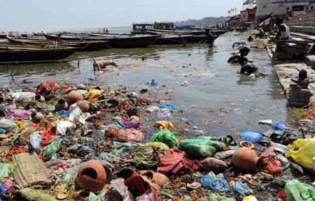

¿Qué es la contaminación?

Muestra la definición de contaminación
Se muestra diferentes tipos de contaminación
Se muestra las consecuencias producidas por la contaminación
Se muestran como podemos reciclar y el uso de las 3R
Se muestra como podemos prevenir la contaminación
Un apartado que muestra la contaminación en mi comunidad



*Reducir: Acciones para reducir la producción de objetos susceptibles de convertirse en residuos, con medidas de compra racional, uso adecuado de los productos, compra de productos sostenibles.
Reutilizar: Acciones que permiten el volver a usar un determinado producto para darle una segunda vida, con el mismo uso u otro diferente. Medidas encaminadas a la reparación de productos y alargar su vida útil.
Reciclar: El conjunto de operaciones de recogida y tratamiento de residuos que permiten reintroducirlos en un ciclo de vida. Se utiliza la separación de residuos en origen para facilitar los canales adecuados.


 1
1 2
2 3
3 5
5 6
6 7
7